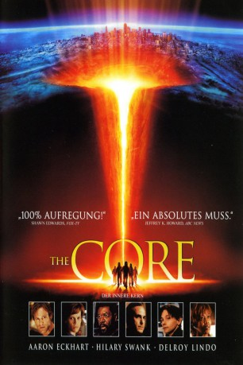

#4019 The Core - Der innere Kern
Alternativ: The Core
 
 IMDB-Wertung: 5.4 / 10
IMDB-Wertung: 5.4 / 10  Metascore: 0
Metascore: 0 
In Folge eines missglückten Militärexperiments kommt die Rotation des Erdkerns zum Stillstand. Zugvögel verlieren daraufhin ihre Orientierung, Herzschrittmacher versagen ihren Dienst und das Klima wird immer rauer. In einem Jahr wird die Welt verglühen - es sei denn, es gelänge, den Erdkern wieder zum Kreisen zu bekommen. Hastig wird eine Gruppe von Spezialisten zusammengestellt, die, Terranauten genannt, in einem Spezialschiff ins Erdinnere vordringen und mittels einer Nuklearexplosion den Motor von Mutter Erde wieder "anwerfen" sollen.
Jahr: 2003
Dauer: 134 Minuten
FSK: 12
Land: USA Studio: Paramount PicturesTonspuren: DD5.1 - ,
Untertitel: Deutsch,
Auflösung: 1080p (1920x816) Größe: 8294 MB
Genre: Action, Thriller, Sci-Fi, Abenteuer
Regisseur: Jon Amiel
Drehbuch: Ned Benson
Soundtrack:
Darsteller:
- Christopher Shyer als Dave Perry
- Ray Galletti als Paul
 Rekha Sharma als Danni
Rekha Sharma als Danni Aaron Eckhart als Josh
Aaron Eckhart als Josh Glenn Morshower als FBI Agent
Glenn Morshower als FBI Agent Anthony Harrison als FBI Agent
Anthony Harrison als FBI Agent Tchéky Karyo als Serge
Tchéky Karyo als Serge Richard Jenkins als General Purcell
Richard Jenkins als General Purcell- Nicole Leroux als Mom
 Hilary Swank als Beck
Hilary Swank als Beck- Dion Johnstone als Flight Engineer Timmins
 Bruce Greenwood als Commander Richard Iverson
Bruce Greenwood als Commander Richard Iverson Alfre Woodard als Stickley
Alfre Woodard als Stickley- Fred Ewanuick als Endeavor Flight Engineer
 Hrothgar Mathews als Chief Engineer Mission Control
Hrothgar Mathews als Chief Engineer Mission Control Stanley Tucci als Zimsky
Stanley Tucci als Zimsky- Jennifer Spence als Zimsky's Assistant
 Michael St. John Smith als Pentagon General
Michael St. John Smith als Pentagon General Delroy Lindo als Brazzelton
Delroy Lindo als Brazzelton DJ Qualls als Rat
DJ Qualls als Rat- Nickolas Baric als Security Policeman - Tribunal
 Fred Keating als Court-Martial Presiding Officer
Fred Keating als Court-Martial Presiding Officer Matt Winston als Luke Barry
Matt Winston als Luke Barry- Laurie Murdoch als Project Destiny Engineer
- Costa Spanos als Project Destiny Engineer
- Alejandro Abellan als U.S.S. Soldier , uncredited
- Benjamin Barton als Scientist / Extra , uncredited
- Jeffrey Gold als Engineer , uncredited
- Angelica Hayden als Coffeehouse Patron , uncredited
 Rick Kain als Chief Petty Officer , uncredited
Rick Kain als Chief Petty Officer , uncredited Alec Medlock als , uncredited
Alec Medlock als , uncredited Eileen Pedde als Lynne
Eileen Pedde als Lynne- Tom Scholte als Acker
- Bart Anderson als Dad
- Justin Callan als Little Boy
- Chris Humphreys als GBTV Reporter - Trafalgar Square
- Shawn Green als Himself
- Ming-Tzong Hong als Scientist
 John Shaw als FBI Agent - Rat's Apartment
John Shaw als FBI Agent - Rat's Apartment- Rosa Di Brigida als Rome Café Patron
- Roberto Roberto als Rome Café Patron
- Ermanno De Biagi als Rome Café Patron
- Marcello Laurentis als Rome Café Patron
 Greg Bennett als Technician - Virgil Base
Greg Bennett als Technician - Virgil Base- Claire Riley als News Anchor
- Marke Driesschen als News Anchor
- Monique Martel als Paris Café Lady
- Lenie Scoffié als Paris Café Lady
- Nathaniel DeVeaux als U.S.S. Constellation Captain
- Robert Manitopyes als U.S.S. Constellation Screen Ops
Datei: X:\2003(A-F)\Core - Der innere Kern, The (2003, FSK12, 1920x816).mkv seit 12.07.2016
Festplatte: HD 2003-2004-2005(A-F)
 Es gibt insgesamt 26 Filme in der Gruppe '2003(A-F)'
Es gibt insgesamt 26 Filme in der Gruppe '2003(A-F)'